Solution
Pour commencer, soit on part vers la droite, soit on part vers la gauche. Si on part vers la droite, on peut monter, mais on est alors coincé, car il n'existe aucun chemin qui passe par les deux cases marquées d'une croix rouge.

On pourrait également partir à droite, puis aller en haut ou à gauche, mais dans les deux cas on se retrouve également coincé.
 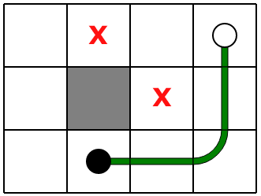
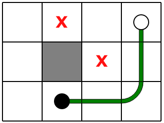
Essayons donc de partir tout au début vers la gauche, en avançant tant qu'on n'a pas le choix. On atteint une situation où l'on peut soit descendre, soit aller à droite.

Si on descend, il n'y a plus qu'une seule manière de compléter le chemin.
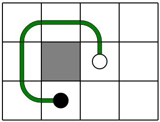Si au contraire on va à droite, on peut trouver deux chemins possibles, selon que l'on aille d'abord à gauche ou d'abord bien en bas.

En résumé, voici les 3 chemins possibles.

Pour commencer, soit on part vers le bas, soit on part vers la droite. Si on part vers le bas, on peut aller à droite, mais on est alors coincé, car il n'existe aucun chemin qui passe par les deux cases marquées d'une croix rouge.

Si on va deux fois vers le bas, on est ensuite obligé de remonter.
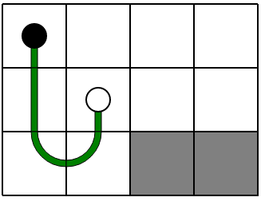À partir de là, on trouve 3 chemins possibles.

Repartons du début et essayons maintenat de partir vers la droite. Si l'on va à droite puis en bas, on atteint une situation dans laquelle on est coincé. Ici encore, il n'existe pas de chemin qui passe par les deux cases marquées.

Si l'on va deux fois vers la droite avant de descendre, on est encore coincé.

Donc, forcément il faut aller trois fois vers la droite. Ensuite, on n'a pas le choix il faut revenir. On arrive à la situation ci-dessous.
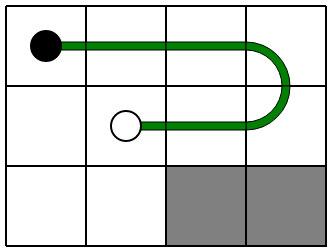A partir de là, on trouve 2 autres chemins possibles.

Pour commencer, soit on part vers la gauche, soit on part vers le haut. Étudions d'abord les départs vers la gauche. On va voir qu'aucun d'eux ne mène à une solution. Si l'on va à gauche, puis en haut, on est alors coincé, car il n'existe aucun chemin qui passe par les deux cases marquées d'une croix rouge.
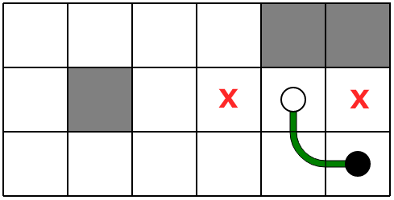 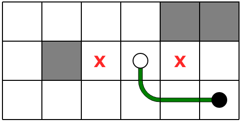
Si l'on va 4 fois à gauche, on est obligé de faire le tour et de monter par la gauche. Mais ensuite, quelque soit le chemin que l'on essaie de prendre, on se retrouve coincé.
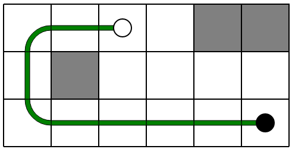 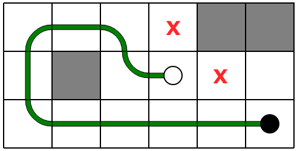
Repartons donc du début et essayons de partir vers le haut. On est obligé de tourner à gauche tout de suite.

Parmi les départs possibles, les trois premiers amènent à des situations coincées, dans lesquelles il n'est pas possible de trouver un chemin passant par toutes les croix rouges.

 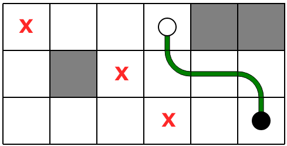
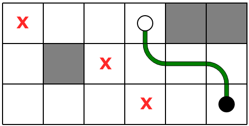
Le seul départ possible est le suivant.
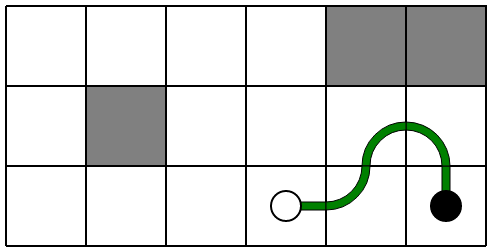En montant, on trouve 3 chemins possibles.
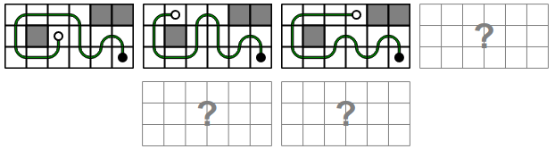En allant à gauche, on trouve les 3 autres chemins possibles.

C'est de l'informatique !
Ce défi propose de mettre en pratique une exploration exhaustive de chemins, optimisée avec une détection anticipée de branches mortes, ce qui correspond à remarquer à certains moments qu'on va forcément être coincé et qu'il ne sert à rien de continuer.
De nombreux algorithmes informatiques exploitent cette stratégie, plus connue sous le nom anglais de branch and bound. Cette stratégie s'applique très bien pour trouver rapidement des solutions valides dans des problèmes où le nombre de possibilités est potentiellement gigantesque, mais qu'il est en fait relativement aisé d'évaluer si un début de solution est forcément voué à l'échec.